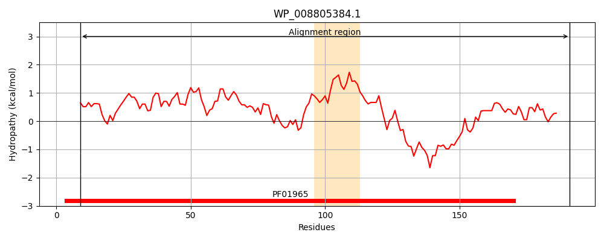
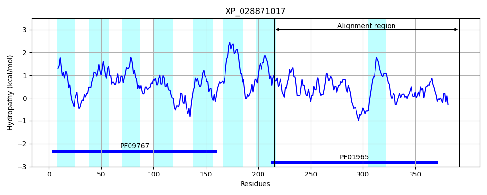
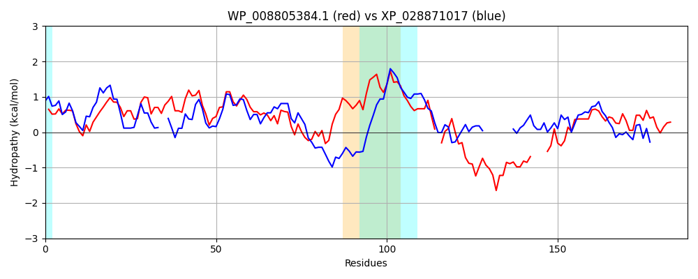

Hit Accession: XP_028871017
Hit TCID: 8.A.145.1.5
Hit Description: gnl|BL_ORD_ID|22683 gnl|TC-DB|XP_028871017.1|8.A.145.1.5 Protein DJ-1 -like protein B [Babesia sp. Xinjiang]
Mach Len: 188
e:0.000000
Query TMS Count : 1
Hit TMS Count: 8
TMS-Overlap Score: 0.750000
Predicted Substrates:None
BLAST Alignment:
Score: 242 , Bit scores: 97 bits, E-value: 2.7e-24, Alignment length: 188, Percentage identity: 34
Query: 9 LAPGSEETEAVTTIDLLVRGGVKVTTASVASDGGLTIVCSRGVKLLADAPLVEVADGDFDIIVLPGGIKGAECFRDSPLLVETVRQFHLSGRIVAAICAAPATVLVPHQLFPIGN-MTGFPALKEHIPADQWQDKRVVWDPRV----NLLTSQGPGTSIDFALKMIDLLVGREKAYEVASQLVMAAGI 191
LA GSE+ E VT +D+L R GV VT ASV S +V + G K+++D + EV+ FD+IV+PGG+ G+ + L++ + + R AAICAAPA V + +P ++ +P V RV +TS+ PGT+++FALK+++LL G +K ++ +++ A I
Sbjct: 215 LANGSEDIEFVTVVDVLRRAGVTVTVASVHSHKD--VVMAHGTKIVSDVVIDEVSSETFDLIVVPGGLPGSNSCAECATLIKMLNEQKDGNRYYAAICAAPAVVFAAGGILDKETAAVAYPGFEDALPK--------VGSGRVCVSGKCVTSKAPGTAMEFALKLVELLCGPQKKEQLKVGMLVHAEI 392 | Protein Hydropathy Plots: |
|---|
|  |  |
Pairwise Alignment-Hydropathy Plot:
|
|---|
|  |